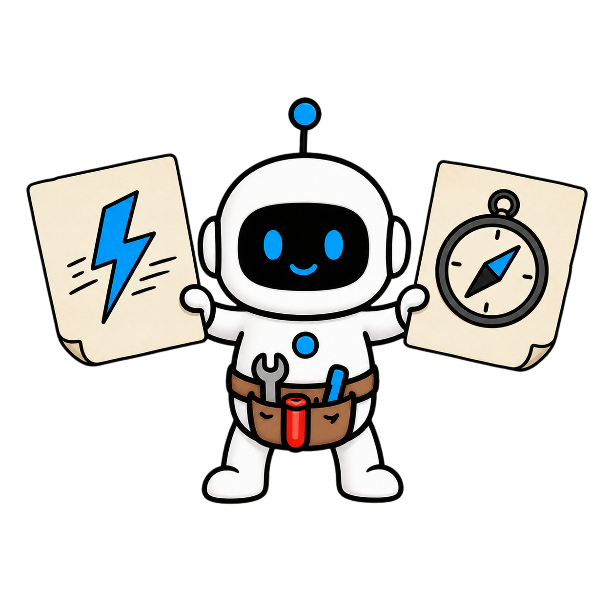
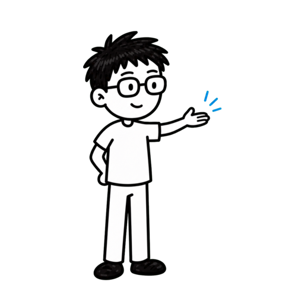

帮助越多，判断越弱？


帮助越多，判断越弱？
帮助越多，判断越弱？
助手还是思考工具

Microsoft Research 助手还是思考工具
助手还是思考工具
助手还是思考工具
研究结果并不单向

研究结果并不单向
做一张思考保留卡

做一张思考保留卡
高价值内容先收藏

先收藏 留下一张思考保留卡让 AI 促发思考
留下一张思考保留卡让 AI 促发思考
留下一张思考保留卡让 AI 促发思考
第 2 章
先辨认被外包的思考
先定义要保留的思考


可靠完成可以交给 AI
可靠完成可以交给 AI


判断本身也是交付物
判断本身也是交付物
先写人的学习目标

≠

先写人的学习目标
标出高风险外包环节

标出高风险外包环节
低风险审阅也会松懈


低风险审阅也会松懈
先做最小独立尝试

先做最小独立尝试
1.定义人的思考目标
2.假设反例权衡最关键
3.答案前先留下尝试
1.定义人的思考目标
2.假设反例权衡最关键
3.答案前先留下尝试
1.定义人的思考目标
2.假设反例权衡最关键
3.答案前先留下尝试
第 3 章
让 AI 暴露张力
让 AI 主动暴露张力

顺滑答案会抹平冲突


顺滑答案会抹平冲突
把冲突目标放在一起


把冲突目标放在一起
把冲突目标放在一起
比较两种替代解释
比较两种替代解释
追问会改变结论的问题
追问会改变结论的问题
原型用追问促发思考
≠

原型用追问促发思考
设计方向不是通用证明
设计方向不是通用证明
1.让冲突同时可见
2.至少比较两种解释
3.只追问关键变量
1.让冲突同时可见
2.至少比较两种解释
3.只追问关键变量
1.让冲突同时可见
2.至少比较两种解释
3.只追问关键变量
第 4 章
把推理过程留在桌面上
把推理过程留在桌面

保留初始判断与置信度

≠

保留初始判断与置信度
事实来源推断分三栏
事实来源推断分三栏
寻找最强反证
寻找最强反证
记录改变判断的转折点
记录改变判断的转折点
记录改变判断的转折点
不看答案再复述
不看答案再复述

让影响路径可审查
让影响路径可审查
1.保留判断变化
2.分开事实来源推断
3.复述检查理解
1.保留判断变化
2.分开事实来源推断
3.复述检查理解
1.保留判断变化
2.分开事实来源推断
3.复述检查理解
第 5 章
保留人的判断关口
保留人的判断关口

价值与不可逆影响要人工
价值与不可逆影响要人工
确认必须看见未知项

确认必须看见未知项
风险升高切换建议模式
风险升高切换建议模式
责任必须有名字
责任必须有名字
疲劳会降低审查
疲劳会降低审查
注意力放在方向节点
注意力放在方向节点
1.高风险决策由人判断
2.确认包含证据与后果
3.注意力集中关键关口
1.高风险决策由人判断
2.确认包含证据与后果
3.注意力集中关键关口
1.高风险决策由人判断
2.确认包含证据与后果
3.注意力集中关键关口
第 6 章
使用思考保留卡
使用四栏思考保留卡

第一栏：人的目标
第一栏：人的目标
第二栏：AI 的角色
第二栏：AI 的角色
第二栏：AI 的角色
第三栏：证据动作
第三栏：证据动作
第四栏：人工关口
第四栏：人工关口
独立尝试再比较证据
≠
独立尝试再比较证据
实践整理，不是官方模板
实践整理，不是官方模板
1.先写人的目标
2.指定 AI 角色和禁止区
3.具名人工完成取舍
1.先写人的目标
2.指定 AI 角色和禁止区
3.具名人工完成取舍
1.先写人的目标
2.指定 AI 角色和禁止区
3.具名人工完成取舍
先保留思考，再提高效率

先保留思考，再提高效率
别让答案替代理解
≠
别让答案替代理解
下一次先写四行
下一次先写四行
Microsoft Research 把两种角色分得很清楚。
助手模式追求更快完成，思考工具模式则用张力、替代解释和追问，
帮助人继续理解问题。
现有研究呈现的是混合结果。
AI 可能提高眼前产出，也可能让想法变窄、批判性投入减少，
或者让人过后更难保留刚才学到的内容。
这期不劝你远离 AI。
我们要做一张思考保留卡，让效率和判断不再是二选一，
并且把研究原型与我们的实践推导清楚分开。
视频全程干货高价值，让你成为更擅长使用 AI 的人，
内容较长，点点关注收藏不迷路。
第一步不是挑模型，
而是说清楚这次工作真正要保留哪一种人的思考。
如果任务只是改格式、找错字或整理已经确定的字段，
目标主要是可靠完成，助手模式通常很合适。
如果任务要求形成观点、理解因果、比较证据或承担后果，
那么独立判断本身就是交付物的一部分。
这时先写一句人的学习目标。
比如我必须能解释为什么选这个方案，
而不是只拿到一份看起来完整的推荐。
再标出最容易被外包的环节。
提出假设、发现反例、权衡价值和解释不确定性，
往往比润色文字更值得保留。
Microsoft 的综述提醒我们，
低风险的 AI 审阅也可能让人检查得更不认真，
因为系统输出很容易被当成默认答案。
所以先做一个最小独立尝试。
哪怕只有三条假设，也能让后续对话变成比较和修正，
而不是被第一份答案牵着走。
本章小节。
第一，先定义这次必须保留的人类思考。
第二，把假设、反例和权衡列为高风险外包环节。
第三，在看 AI 答案前留下一个最小独立尝试。
第二步不是让 AI 更肯定，而是让它主动暴露问题中的张力。
普通助手会把模糊要求迅速收敛成一份顺滑答案。
速度很快，但那些尚未解决的冲突也可能一起被抹平。
思考工具模式可以先列出互相冲突的目标。
增长和隐私、速度和可维护性、自动化和责任边界，
都应该留在同一张桌面上。
然后要求至少两种替代解释。
不是为了制造无穷分支，
而是防止第一个故事因为表达顺畅就自动胜出。
还可以让 AI 提出真正会改变结论的问题。
哪些证据缺失，哪个假设一旦为假，当前方案就不再成立。
Microsoft 介绍的原型正是在尝试这些机制，
包括突出张力、呈现替代视角和给出探究性问题。
重要边界是，这些原型展示了设计方向，
不等于已经证明任何场景都能稳定提升判断。
本章小节。
第一，让冲突目标同时可见。
第二，至少比较两种可成立的解释。
第三，只追问那些会真正改变结论的问题。
第三步是把推理过程留在桌面上，而不是只保存最终答案。
先记录初始判断和置信度。
之后 AI 给出什么都不要覆盖原文，
而是在旁边追加变化和原因。
每条关键结论都绑定证据。
把原始来源、观察事实和推断分成三栏，
能防止流畅语言掩盖证据跳跃。
让 AI 不只写支持项，也写最强反证。
一个经得住反证的判断，比十条重复赞同更有信息量。
如果结论改变，要求留下转折点。
是哪条新证据、哪个定义变化，还是仅仅因为措辞更有说服力。
完成后做一次不看答案的复述。
能否用自己的话解释因果链，是检查理解和保留度的简单方法。
这套过程不会消除偏差，但它让人和 AI 的影响路径可审查，
也让下次复盘不必猜发生了什么。
本章小节。
第一，保留初始判断和每次改动。
第二，把事实、来源和推断分开记录。
第三，用不看答案的复述检查是否真的理解。
第四步是明确哪些关口必须由人做最后判断。
凡是涉及价值取舍、不可逆影响、他人权益或公开承诺，
都不应该因为 AI 给出高置信度就自动通过。
人工关口不只是点击确认。
负责人必须看到备选项、主要证据、
剩余不确定性和最坏可接受后果。
对于低风险、可回滚的步骤，
可以让 Agent 执行并留下日志。
风险升高时，再切换到建议模式。
把责任写进流程。
谁定义成功，谁批准例外，谁在结果变坏时负责停止，
不能只写由 AI 辅助。
还要检查一种隐性风险。
系统越像一个可靠同事，人越容易在疲劳时减少审查，
这正是低投入使用最需要防守的地方。
好的 AI 工作流不是处处插入人工，
而是把稀缺注意力放在真正决定方向和后果的节点。
本章小节。
第一，价值与不可逆决策保留人工关口。
第二，确认必须包含证据、未知项和后果。
第三，把人的注意力集中在改变方向的节点。
最后，把前面的规则压缩成一张四栏思考保留卡。
第一栏写人的目标。
这次必须形成什么理解、判断或可迁移能力，
不能只写完成一份文档。
第二栏写 AI 的角色。
让它整理、质疑、比较还是执行，并标明禁止替代的思考环节。
第三栏写证据动作。
列出原始来源、最强反证、仍未知的变量，
以及什么新证据会改变结论。
第四栏写人工关口。
谁在何时决定继续、回滚或公开，并记录决定后的理由。
使用顺序是先独立尝试，再让 AI 暴露张力，接着比较证据，
最后由人做带理由的判断。
这张卡是对 Microsoft 文章原则的实践化整理，
不是其官方模板。
它的价值在于让思考是否被保留变得可见。
本章小节。
第一，先写人的学习与判断目标。
第二，为 AI 指定角色、证据动作和禁止区。
第三，用具名人工关口完成最终取舍。
把整套方法串起来：先辨认不能外包的思考，
再让 AI 暴露张力，留下推理痕迹，最后守住人工判断关口。
效率不是敌人。
真正的风险是用更快的答案替代了本来需要形成的理解，
却没有意识到交付物已经变了。
下一次打开 AI 前，先写四行：人的目标、AI 的角色、
证据动作、人工关口。
然后再开始对话。
关注 Tiny Agent，成为更擅长使用 AI 的人！
AI Agent
帮得越多，人的
判断力为什么
可能越弱？


Tiny Agent
成为更擅长使用 AI 的人！